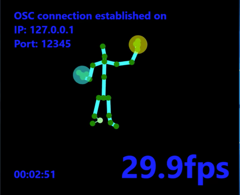
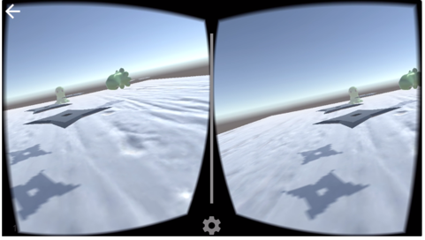

Implementation
Solution Overview
To design and analyze the user experience associated with interacting with Virtual Reality using natural gestures, a Google Cardboard VR game was designed and scripted in Unity3D using C Sharp. This game was then compiled against android studio SDK to create an android application which was tested on a google cardboard. The game uses interactions from Microsoft Kinect gesture recognition and transmits the data via OSC to a receiver script written in Unity. The result is such that the game can be deployed as a standalone application (no tethering required) and communicate with Microsoft Kinect via OSC in the same network.
Working with Kinect
To detect the Kinect skeletal data a python wrapper for Kinect V2.0 called as KinectV2OSC is used. This wrapper converts the Kinect data into OSC messages and identifies various joints and body parts with values indicating if the joint has been tracked or not. Few joints such as hands have trigger state variable whose values are either Open or Closed. The OSC message also has value indicating the confidence level of the tracking which is useful while manipulating the game object in Unity using these values.

Working with Unity3D

Building a VR game in Unity is different from building a conventional game in Unity. In the Conventional game a Main camera will decide the view and object positions. In VR, a stereoscopic camera is added as a replacement for the Main Camera. Google VR also provides support for Gaze detection and Gaze based input which can be used as an interaction method to interact with game objects. For this project, Gaze detection was not implemented since the interaction will be via Kinect.
Communicating between Kinect and Unity
1) Transmitter:
The python Wrapper connects to the Localhost and a default port of 12345. The port and IP address can be changed using a text file containing a list of IP address and port number placed in the same folder location as that of the python Wrapper. The python wrapper upon executing opens a viewer where the skeletal data is visualized as a stick figure and the program binds itself to the assigned port and starts broadcasting the OSC data.
2) Receiver:
In order to receive OSC signals in Unity, a unity package called Rug.OSC was used. The dll and other binaries were imported in to the Unity environment and a new game object called OSC_Controller was created to monitor the trigger state of the scripts. The OSC Receive script was attached to the OSC Controller and the listening port was configured to point to the OSC broadcasting port. Once the OSC data is received in Unity, a C Sharp code was written to parse the OSC message and identify the state of the hand and make a decision out of it. For instance, If the hands are closed then a user click event is triggered on the VR game.
Creating the Android Application
Unity3D version 5.0 and above has the support to create an android application from the Unity environment by building the Unity game using Android SDK tools. This results in generating android application file with the extension .apk. This file can then be moved to any android device and can be launched to interact with the VR game.